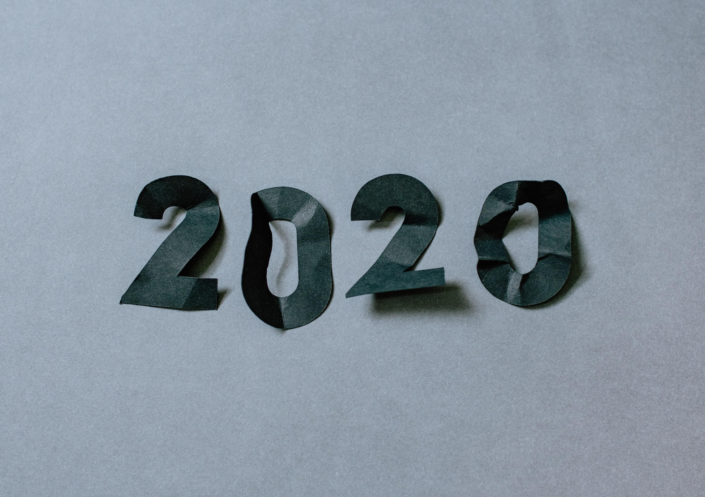

El balance del 2020Looking back at 2020

Ya termina el día de Reyes y, como dirían en Juego de Tronos, aquí termina mi guardia y puedo hacer balance, con un poco de retraso, de este 2020 que hemos dejado atrás.
El año 2020 ha sido, como imagino que para muchos de vosotros, uno de los años más difíciles de mi vida. Aunque teniendo en cuenta las circunstancias tan excepcionales que hemos vivido, una pandemia global que ha afectado completamente a nuestra vida, lo raro es que hubiera sido todo normal y todo positivo.
El resumen del año
Ha sido un año muy duro para mí en lo personal. Ha habido de todo: muertes de personas queridas, sumado a la rabia de no poder estar cerca despidiendo y acompañando en el duelo a los míos, enfermedades y la preocupación por lo que pasaría, operaciones fallidas, problemas con el seguro médico, con mi antiguo alquiler, problemas familiares que no esperaba y que dejan cicatrices… Ha sido el año del todo mal, de intentar llegar a todo y no alcanzar nada, de sentirme mal padre, mala pareja, mal profesional… Ha sido el año de la desconcentración y en el que el concepto de “yo” casi se ha perdido por completo entre tantas otras cosas más urgentes o importantes. Ha sido un año que realmente ha puesto en jaque mi salud mental. Y aún así tengo que sentirme afortunado por cómo hemos salido, pues por desgracia habrá miles de situaciones mucho peores que la mía que no puedo llegar ni a imaginar.
Pero también ha sido el año en el que he podido estar más cerca que nunca de mi familia, compartiendo momentos que de otra forma me hubiera perdido, momentos muy especiales con mis hijos tan pequeños de 1 y 4 años. El año en el que el trabajo se ha conciliado de forma más natural con el resto de mi vida. El año que nos ha hecho plantearnos cosas que no nos hubiéramos planteado de otro modo y que espero nos haya servido para tomar mejores decisiones para el futuro.
Por ello quiero confiar en eso de que la memoria es selectiva y quedarme con lo bueno.
Lo bueno del 2020
Cambio de vida
La pandemia nos trajo un confinamiento duro en marzo donde fuimos más conscientes que nunca de la vida que habíamos elegido: la casa donde vivíamos, nuestros vecinos, el barrio, cómo estábamos educando a nuestros hijos. También trajo una incertidumbre en el futuro que nos llevo a replantearnos nuestra economía familiar, a la que habíamos puesto demasiada presión y que también era un factor que afectaba a nuestra familia. Todo ello nos llevo, como dice una canción de Izal, a buscar nuestro cambio de vida, de ritmo y maneras.
Nos habíamos mudado en septiembre de 2019 a un barrio a las afueras de Madrid. Optamos por un termino medio que creíamos nos ofrecía una vida mejor para nuestros hijos sin alejarnos demasiado, para seguir cerca de la familia y que siguiera siendo práctico para conciliar con nuestros trabajos. Pero ese termino medio no nos acababa de convencer. Habíamos perdido lo bueno de nuestro antiguo barrio más céntrico y seguíamos sin tener lo bueno de habernos alejado más de la ciudad.
Pasamos los pocos ratos libres que tuvimos en el confinamiento estricto viendo documentales de pueblos cerca de Madrid buscando otras opciones de vida. Al final nos decidimos y esperamos a que acabara el confinamiento para ponernos a buscar casa. En julio habíamos elegido y, tras un verano de gestiones con bancos, en septiembre nos mudamos a nuestra nueva casa un día antes de empezar el colegio. Un lugar más lejos de Madrid pero que no nos alejaba demasiado de la familia, cerca de la naturaleza, con opciones culturales, de deporte y en una comunidad más pequeña en la que poder participar (cuando nos dejen). Una vida más cercana, más familiar, donde espero que seamos todos felices.
Aún con el año que llevamos puedo decir que estoy muy contento con la decisión. Hemos disfrutado mucho de nuestro nuevo entorno, de los paseos por la naturaleza, del mayor espacio, de la vida más tranquila, y de lo poco que hemos podido aprovechar de la nueva zona. Quiero pensar que hemos tomado la decisión acertada, una decisión que dudo hubiéramos tomado si el 2020 no nos hubiera puesto contra las cuerdas, y que será un momento que recordemos el resto de nuestra vida como muy positivo y endulce la memoria de este año tan malo.
Cambio de trabajo
El 15 de enero del 2020 comenzaba una nueva etapa profesional. Dejaba atrás la que ha sido la etapa más bonita de mi carrera profesional en Amplía IIOT, donde había liderado un producto open-source del que me siento muy orgulloso, consiguiendo unos estándares de calidad muy altos que, más allá de las vanity metrics, nos había permitido desarrollar y desplegar rápido y con confianza en varios proyectos en los que habíamos salido a producción, cosa que con la solución anterior habría sido imposible. También mentoricé a las nuevas incorporaciones compartiendo el limitado conocimiento que tengo, tarea con la que disfrute igual o más que desarrollando el producto. Por esto y por estar rodeado de amigos y compañeros que, además de la calidad técnica, tenían una calidad humana increíble, fui tremendamente feliz, aprendí y crecí mucho.
Pero decidí salir de la zona de confort que me había ganado y en la que podía haber seguido muchos años. Lo hice porque se me presentaron oportunidades que me permitían dar un salto hacia adelante, me retaban y en donde estaba convencido podía seguir creciendo. Y me decidí por Liferay, para trabajar con compañeros a los que admiraba, que sabían mucho más que yo y con los que tenía unas ganas enormes de trabajar.
Lo hice en un momento en el que, como sabéis, no fue ni mucho menos el más adecuado. Muchos otras personas de nuestro sector hicieron lo mismo y por unos motivos u otros la decisión no salió nada bien. Decir que, a pesar de las circunstancias, todos mis compañeros me pusieron las cosas muy fáciles y que, si en los momentos difíciles las empresas y las personas demuestran cómo son realmente, Liferay ha demostrado con creces ser un sitio genial en el que trabajar.
Ha sido un año duro. Ha habido grandes retos que no entraban en mis planes en un primer momento y que han puesto al límite mis habilidades y conocimientos. Pero al fin y al cabo ese era el plan: aprender y crecer. Y aquí sigo aprendiendo y luchando por ponerme al nivel y sentirme completamente productivo (cosa que aún no he conseguido pero espero llegue pronto), entre unos compañeros a los que admiro aún más y de los que tengo muchísimo que aprender.
Participación en la comunidad
El año 2020 también me lo había planteado como el primero en el que me iba a centrar en aportar a la comunidad. Había tenido la gran suerte de que la primera vez que me atreví a mandar un Call 4 Paper a una conferencia me habían seleccionado e iba a poder estrenarme nada más y nada menos que en el T3chFest, lo que me hacía una ilusión tremenda.
Para intentar vencer al síndrome del impostor que sufría en esos momentos y que fuera el inicio de algo me abrí una nueva cuenta de Twitter para enfocarla de una manera más profesional, para poder compartir y participar con la comunidad de software, y me propuse crear un blog.
Debo reconocer que me costó cerrar mi antigua cuenta de Twitter, que utilizaba casi completamente de forma pasiva y con la que no aportaba ningún valor, pensando que iba a dejar 73 seguidores y tenía que empezar de 0… Absurdo lo sé, pero fue así. Me lancé y lo agradezco mucho, pues me ha servido para conocer personas geniales, interactuar con gente del sector a la que admiro, aprender mucho y vencer muchos miedos y complejos de expresar opiniones y compartir conocimientos. Quería haber conseguido más, no me voy a engañar, pero tampoco quiero desmerecer lo conseguido, lo cual no ha sido fácil, y espero que sea solo el inicio de ese cambio que buscaba.
También conseguí publicar mi blog. Aunque quedé lejos del objetivo que me había puesto de escribir 6 post en lo que quedaba de año, me sirvió para aprender muchísimo. Aprendí sobre dominios, hosting, flujos de despliegue de un sitio estático, HTML y CSS, de los que hacía muchísimos años que me había olvidado y de los que sólo toqué dos cosas en su momento, … Todo eso será la base para este año seguir adelante y ponerme nuevos objetivos con el blog.
Como sabéis, el T3chFest tuvo que cancelarse y con ello mi charla, pero también trajo cosas positivas: me preparé una charla con mucha ilusión, comprobé el trato exquisito de la organización, me lancé a participar en el Liferay Symposium Spain 2020 que disfrute mucho y a probar con otros C4P, aunque no saliera ninguno más. Ojalá en los T3chDays que se inauguraron hace un mes tenga la oportunidad de contaros parte de lo que quería contar y pueda compartir otros conocimientos y experiencias útiles en algún otro evento este año.
Por todo esto, este año ha sido bastante positivo en este aspecto. He vencido muchos miedos y derribado muchas barreras que espero me permitan seguir creciendo. Porque creo que una de las cosas más bonitas que tiene nuestro sector es la comunidad, porque uno de los momentos que siempre he disfrutado más es compartiendo lo que sé, porque me encanta poder interactuar con otras personas que admiro y que me hacen crecer con sus conocimientos y puntos de vista, y porque me gustaría ser una pequeñísima parte dentro de este nuestro pequeño mundo.
Conclusión
2020 ha sido un año de crisis: crisis mundial, crisis personal. Y en estas crisis sólo nos queda la esperanza de que consigamos salir mejores. Espero de corazón que así sea y pueda recordar este año que terminó como el inicio de muchas cosas positivas en el mundo y en mi vida.
Epiphany is drawing to a close and, as they'd say in Game of Thrones, here my watch ends and I can take stock, a little late, of this 2020 we've left behind.
The year 2020 has been, as I imagine it has for many of you, one of the hardest years of my life. Although, given the truly exceptional circumstances we've lived through — a global pandemic that has completely upended our lives — the strange thing would have been for everything to have stayed normal and positive.
The year in review
It's been a very hard year for me personally. There's been a bit of everything: the deaths of loved ones, compounded by the rage of not being able to be close by to say goodbye and to share the grief with my own; illnesses and the worry over what would happen; failed operations; problems with health insurance, with my old rental, family troubles I didn't see coming and that leave scars… It's been the year of everything going wrong, of trying to keep up with everything and reaching nothing, of feeling like a bad father, a bad partner, a bad professional… It's been the year of losing focus, the year in which the very concept of “me” has almost been lost entirely amid so many other, more urgent or more important things. It's been a year that has genuinely put my mental health in jeopardy. And even so, I have to count myself lucky for how we've come out of it, because sadly there will be thousands of situations far worse than mine that I can't even begin to imagine.
But it's also been the year in which I've been able to be closer than ever to my family, sharing moments I would otherwise have missed — very special moments with my children, so young at 1 and 4 years old. The year in which work has fit more naturally alongside the rest of my life. The year that has made us question things we wouldn't have questioned otherwise, and that I hope has helped us make better decisions for the future.
That's why I want to trust in the idea that memory is selective and hold on to the good.
The good side of 2020
A change of life
The pandemic brought us a harsh lockdown in March, in which we became more aware than ever of the life we had chosen: the house we lived in, our neighbors, the neighborhood, how we were raising our children. It also brought an uncertainty about the future that led us to rethink our family finances, which we had put under too much pressure and which was also a factor weighing on our family. All of it led us, as an Izal song goes, to seek our cambio de vida, de ritmo y maneras.
We had moved in September 2019 to a neighborhood on the outskirts of Madrid. We'd opted for a middle ground that we thought offered a better life for our children without taking us too far away, so we could stay close to family and so it would remain practical for balancing our jobs. But that middle ground never quite convinced us. We had lost what was good about our old, more central neighborhood and we still didn't have what was good about moving farther out of the city.
We spent the few free moments we had during the strict lockdown watching documentaries about towns near Madrid, looking for other ways of living. In the end we made up our minds and waited for the lockdown to end so we could start house-hunting. By July we had chosen, and after a summer of dealings with banks, in September we moved into our new home the day before school started. A place farther from Madrid but not too far from family, close to nature, with cultural and sporting options, and in a smaller community we could take part in (once we're allowed to). A closer, more family-centered life, where I hope we'll all be happy.
Even after the year we've had, I can say I'm very happy with the decision. We've thoroughly enjoyed our new surroundings, the walks in nature, the extra space, the quieter life, and the little we've been able to make the most of in the new area. I want to believe we made the right choice — a choice I doubt we'd have made if 2020 hadn't pushed us against the ropes — and that it will be a moment we remember for the rest of our lives as a very positive one, sweetening the memory of such a bad year.
A change of job
On January 15, 2020, a new professional chapter began. I left behind what has been the most beautiful stage of my career at Amplía IIOT, where I had led an open-source product I feel very proud of, achieving very high quality standards that, beyond the vanity metrics, had allowed us to develop and deploy quickly and confidently across several projects we'd taken to production — something that would have been impossible with the previous solution. I also mentored the new hires, sharing the limited knowledge I have, a task I enjoyed as much as or more than building the product. Because of this, and because I was surrounded by friends and colleagues who, on top of their technical quality, had incredible human qualities, I was tremendously happy, learned a lot, and grew a great deal.
But I decided to step out of the comfort zone I had earned and where I could have stayed for many more years. I did it because opportunities came up that would let me take a leap forward, that challenged me, and where I was convinced I could keep growing. And I chose Liferay, to work with colleagues I admired, who knew far more than I did, and with whom I was incredibly eager to work.
I did it at a moment that, as you know, was far from ideal. Many other people in our industry did the same, and for one reason or another the decision didn't turn out well at all. I have to say that, despite the circumstances, all my colleagues made things very easy for me, and that if companies and people reveal their true nature in difficult moments, Liferay has more than proven to be a great place to work.
It's been a tough year. There have been big challenges that weren't part of my plans at first and that have pushed my skills and knowledge to the limit. But at the end of the day, that was the plan: to learn and to grow. And here I am, still learning and fighting to get up to speed and feel fully productive (something I haven't managed yet but hope to reach soon), among colleagues I admire even more and from whom I have so much to learn.
Taking part in the community
I had also set out for 2020 to be the first year I'd focus on giving back to the community. I'd had the great fortune that the first time I dared to send a Call 4 Paper to a conference, I was selected, and I was going to make my debut at none other than T3chFest, which thrilled me enormously.
To try to beat the impostor syndrome I was suffering from at the time, and to make it the start of something, I opened a new Twitter account to focus it in a more professional way, so I could share and engage with the software community, and I set myself the goal of starting a blog.
I have to admit it was hard to close my old Twitter account, which I used almost entirely passively and through which I added no value, thinking I was going to leave 73 followers behind and start from 0… Absurd, I know, but that's how it was. I took the plunge and I'm very grateful I did, because it's helped me meet wonderful people, interact with people in the industry I admire, learn a lot, and overcome many fears and hang-ups about expressing opinions and sharing knowledge. I'd wanted to achieve more, I won't kid myself, but nor do I want to undersell what I did achieve, which wasn't easy, and I hope it's just the beginning of the change I was looking for.
I also managed to publish my blog. Although I fell well short of the goal I'd set myself of writing 6 posts in what was left of the year, it helped me learn a great deal. I learned about domains, hosting, deployment workflows for a static site, HTML and CSS — which I'd forgotten about many years ago and had only dabbled in a couple of things back in the day… All of that will be the foundation for moving forward this year and setting myself new goals with the blog.
As you know, T3chFest had to be canceled, and with it my talk, but it also brought positive things: I prepared a talk with a lot of enthusiasm, I experienced the organizers' exquisite treatment, I took the plunge and took part in the Liferay Symposium Spain 2020, which I enjoyed a lot, and I tried my luck with other C4Ps, even though none of the others came through. I hope that at the T3chDays launched a month ago I'll get the chance to tell you part of what I wanted to say, and that I'll be able to share other useful knowledge and experiences at some other event this year.
For all these reasons, this year has been fairly positive in this respect. I've overcome many fears and torn down many barriers that I hope will let me keep growing. Because I think one of the most beautiful things about our industry is the community; because one of the moments I've always enjoyed most is sharing what I know; because I love being able to interact with other people I admire and who help me grow with their knowledge and points of view; and because I'd like to be a tiny part of this little world of ours.
Conclusion
2020 has been a year of crisis: a global crisis, a personal crisis. And in crises like these, all we have left is the hope that we'll manage to come out better. I sincerely hope that's the case, and that I'll be able to remember this year that just ended as the beginning of many positive things in the world and in my life.